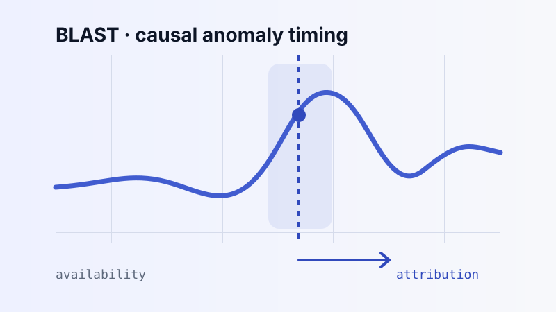
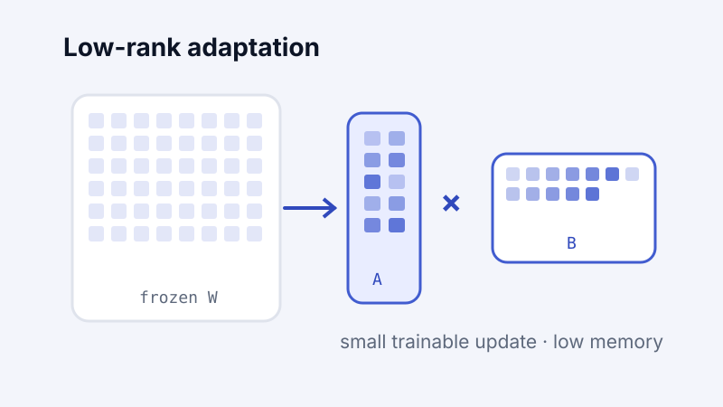
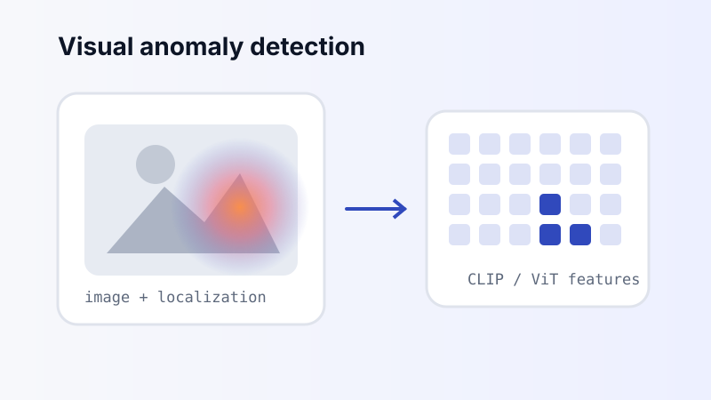
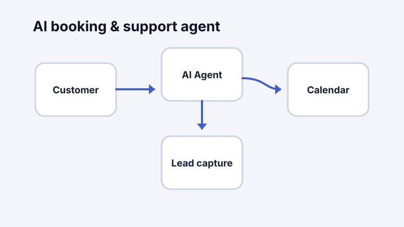

Research · Time series
BLAST-TSAD
Causal time-series anomaly detection with explicit separation between score availability and anomaly attribution under bounded latency.
Hi, I’m
AI Engineer M.S. Researcher
I work on efficient and reliable adaptation of foundation models, with research spanning low-rank and parameter-efficient adaptation, causal time-series anomaly detection, and foundation-model-based visual anomaly detection.
Open to research internships and AI engineering opportunities
Research areas
My work connects adaptation, efficiency, robustness, and evaluation across language, time-series, and visual settings.
PEFT, LoRA/QLoRA, low-rank approximation, adapters, model compression, and efficient attention.
Causal evaluation, bounded latency, streaming inference, and attribution-aware anomaly detection.
CLIP- and ViT-based anomaly detection, robustness, and image- and pixel-level evaluation.
Baseline reproduction, automated experiments, careful evaluation, and debugging of model and data pipelines.
Selected research implementations and applied AI systems.

Research · Time series
Causal time-series anomaly detection with explicit separation between score availability and anomaly attribution under bounded latency.

Current direction · LLMs
Technical study and research preparation around PEFT, LoRA/QLoRA, low-rank approximation, SVD-based compression, and efficient attention.

Reproducibility · Vision
Independent reproduction and evaluation of WinCLIP, AnomalyCLIP, APRIL-GAN, and AF-CLIP across industrial anomaly-detection benchmarks.

Applied AI
An end-to-end AI receptionist workflow for answering questions, capturing leads, and booking appointments.
Writing
For now, my writing lives on Medium. I’ll use this portfolio to surface future research notes and personal technical posts.
An introduction to instruction tuning and the role of Flan-T5 in making pretrained language models more general and task-responsive.